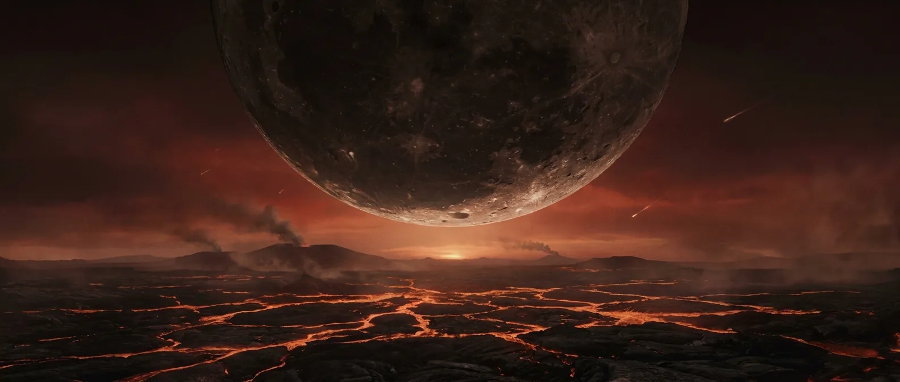
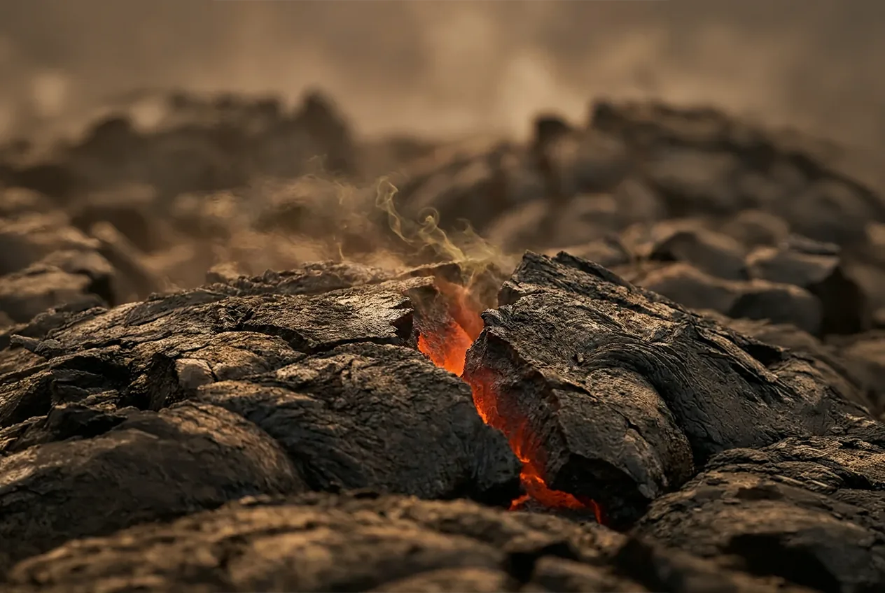
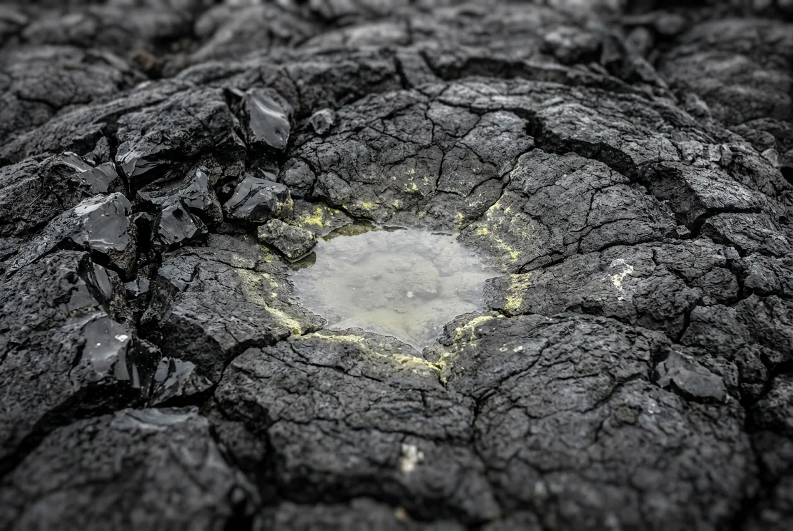

Named after Hades, and the name is doing honest work. There is no oxygen, no ozone, no soil and for much of it no solid ground. The Moon is close enough to raise tides hundreds of metres high and to spin the planet through an entire day in about six hours.
Arriving before ~4.4 Ga, while the magma ocean is still open: a few seconds. Arriving late, after liquid water condenses, buys you the full minute. Either way the cause is the same and there is no version of this where you last an hour.

Scale 0–40%. Consciousness fails somewhere below about 10%, and fire needs about 16%. Free O₂ will not exist in quantity for another 1.6 billion years, so neither line is remotely in reach.
Today: 0.0004 bar. Early on, most of Earth's carbon is in the air rather than in rock, and the pressure at the surface may exceed a deep-ocean dive.
Scale −20 to 250 °C. Early Hadean the surface is partly molten. Even after oceans form, a thick CO₂ blanket keeps water liquid only because the pressure is enormous.
Scale 0–24 h. Earth is spinning far faster; the Moon has not yet dragged it down. Sunrise to sunrise takes less time than one night's sleep.
Scale 0–400,000 km. It appears about thirteen times wider than today and raises tides hundreds of metres high.
Ozone is made from O₂, and there is no O₂. Solar UV-C reaches the ground unfiltered. Irrelevant to your survival here only because other things kill you first.

Reflex, not choice. What enters your lungs is mostly carbon dioxide and nitrogen with sulfur compounds. There is no oxygen in it at all.
Your urge to breathe is triggered by CO₂ in your blood, not by lack of oxygen. In an atmosphere this CO₂-rich the sensation arrives instantly and is overwhelming. This is why the Hadean feels worse than simple vacuum, which kills you calmly.
Gas moves along its partial-pressure gradient. With zero O₂ outside, oxygen diffuses out of your blood into the air you just inhaled. Breathing actively strips you faster than holding your breath would.
Roughly the timing seen in industrial nitrogen-asphyxiation accidents and in cabin decompression training. You do not get a warning you can act on.
Before ~4.4 Ga, skip everything above: the air is hot enough to cook your airway on the first breath, and this takes seconds instead.
You do not. For completeness, here is what the planet offers anyway.

None you can use. A rebreather with its own O₂ supply is the only thing that changes this page.
After ~4.4 Ga, yes: a global ocean, acidic from dissolved CO₂ and near boiling in places.
Nothing is alive. The earliest contested traces of life appear right at the Hadean's end.
Impossible. Fire needs oxygen, and there is none. The glow on the horizon is molten rock, not combustion.
Bare basalt. No wood, no fibre, no clay worth the name, and the ground is periodically resurfaced by impacts.
You are the only living cell on the planet, and there are about thirty trillion of you.